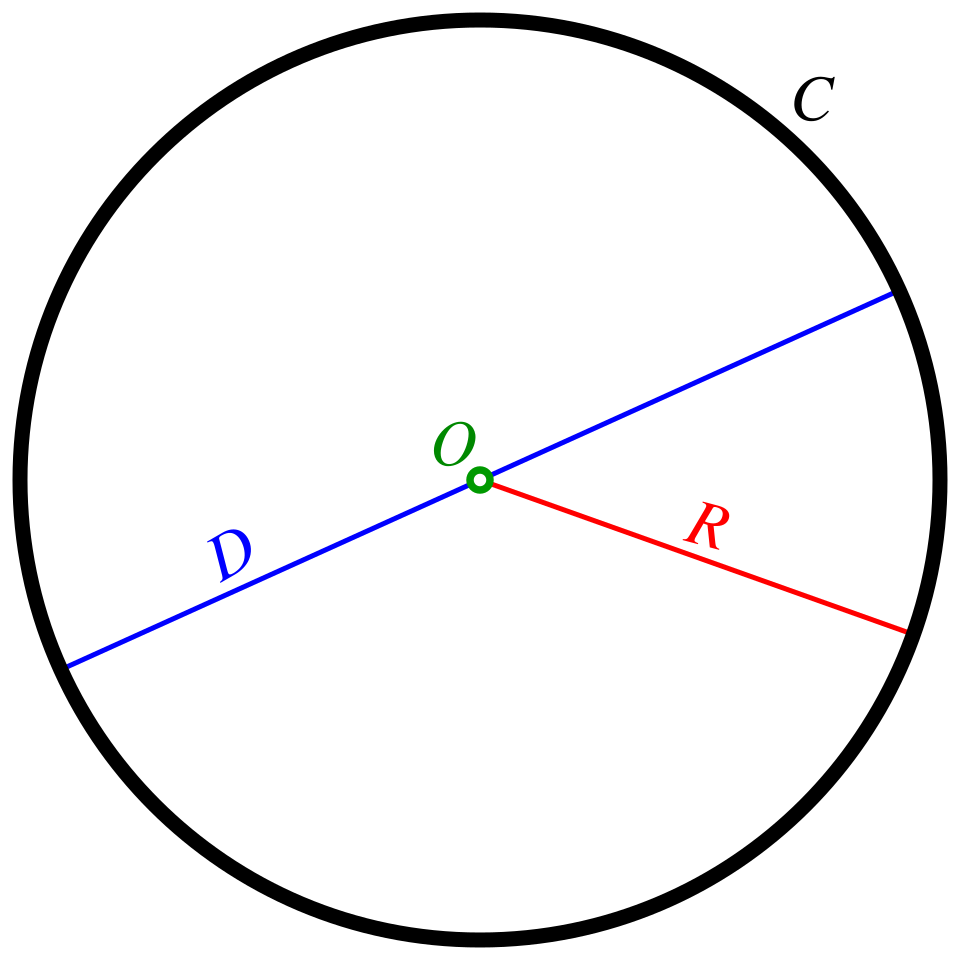

⛏I centered a huge tower right here.
巨大な塔をここに中央に配置しました。
[aɪ ˈsɛn.tə.ɾə ˈhjuːdʒ ˈtaʊ.ɚ ˈraɪt hɪɹ]
- centered a → "centered"の末尾"d"が"a"[ə]に連結してフラップ化[ɾ]に変わり [ˈsɛn.tə.ɾə]
アイ センタラ ヒュージ タワー ライト ヒア

⛏I centered a huge tower right here.
巨大な塔をここに中央に配置しました。
⛏At the center of the map there's a lot of caves.
マップの中央にはたくさんの洞窟があります。
⛏Everything's centered at the exact coordinates.
すべてが正確なコーディネートに中央配置されています。
We found multiple centers across the map.
地図全体で複数の中心地を見つけました。
The base has three resources and farming centers.
基地には3つの資源と農業の中心地があります。
This design centers on the village square.
このデザインは村の広場を中心にしています。
Every good build centers around a focal point.
すべての良い建築は焦点を軸に組み立てられています。
I centered the entire build around this mountain.
この山を軸にして、建築全体の中心を置きました。
We centered all the buildings perfectly on the grid.
すべての建物をグリッド上に完全に中央配置しました。
The massive fountain is centered in the plaza.
その巨大な噴水は広場の中央に配置されています。
All farms must be centered around water sources.
すべての農場は水源を中心に配置されなければなりません。
We are centering the structure now.
今、構造物を中央に配置しているところです。
Centering everything took two hours.
すべてを中央に配置するのに2時間かかりました。
⛏The whole redstone system centers around this repeater.
レッドストーン・システム全体がこのリピーターを中心に成り立っています。